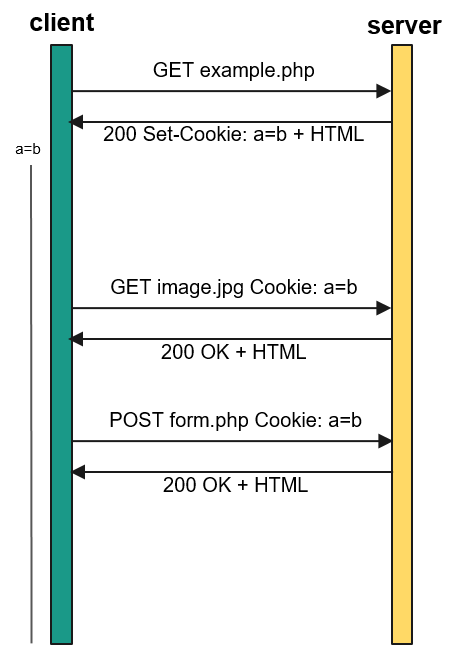
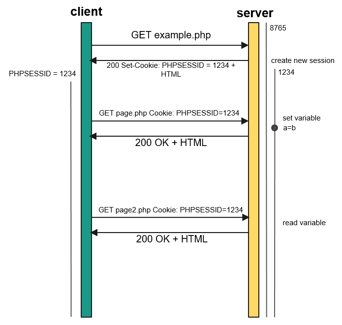

<a href="… (GET)<input type="hidden" value="… (POST/GET)name=value pairsSet-Cookie) in the server's HTTP response headCookies) in the HTTP request head
namevalueexpirespathdomainsecurehttponlyname and value
expires
time() + 60*60*24*7time() - 1
time() - 60*60*24*7path
/admin can't be read from /
domain
www.ikdoeict.be instructs a cookie to be created for ikdoeict.be, then that cookie can also be read from student.ikdoeict.be
secure
httponly
setcookie()
name and value are mandatorysetcookie('color', $theValue, time() + 24*60*60*7);$_COOKIE
$_GET and $_POST, but for cookies$color = (string) isset($_COOKIE['color']) ? $_COOKIE['color'] : '#FFFFFF';/assets/10/examples/2.sitecolor/v1-delay →
Although the code looks OK, someting odd is happening: the color changes indeed, but with a one-page delay. Refreshing the page in the browser seems to fix this too
The problem relies in the fact that setcookie() doesn't create a cookie, but sends an instruction to create one. At the time the page is being rendered, the cookie hasn't change yet (as the browser creates the cookie when the HTML's already been rendered)
/assets/10/examples/2.sitecolor/v2-forcedrefresh →
By using a header('location: ...'); we can enforce a refresh from within our PHP code. That way, when the page reloads, the cookie will be present.
httponly is false)
PHPSESSID
$_SESSION with themphp.ini settings
// path where sessions are saved on the server
session.save_path = /tmp
// name of the session id variable
session.name = PHPSESSID
// use cookies for storing the session id?
session.use_cookies = 1
// expiry time of the cookie. Default value: when the browser closes
session.cookie_lifetime = 0
// expiry time of session variables (in seconds)
session.gc_maxlifetime = 1800session_start();
echo '<a href="nextpage.php?PHPSESSID=' . session_id() . '" title="to next page">to next page</a>';session_start(); which could result in concurrency problems.
session_start();PHPSESSID in $_COOKIE, $_GET, or $_POST
$_SESSION is populatedsession_start();
$_SESSION['name'] = 'Bramus!';session_start();
$name = isset($_SESSION['name']) ? $_SESSION['name'] : 'stranger';session_start();
unset($_SESSION['name']);session_start();
// Best practice: unset all session vars before stopping the session
$_SESSION = [];
// Note: if it's desired to kill the session, also delete the session cookie ...
session_destroy();let's have a thourough look at the code: /assets/10/examples/4.login/v1 →
The login page is very simple for this proof-of-concept: any login where the username equals the password is accepted
If the login validates, a user object typically the result of a database query is stored in the session, along with the name
The content pages use a simple if to display the $_SESSION['user']['username'] or a request to log in
The logout page simply destroys the session and redirects to the index